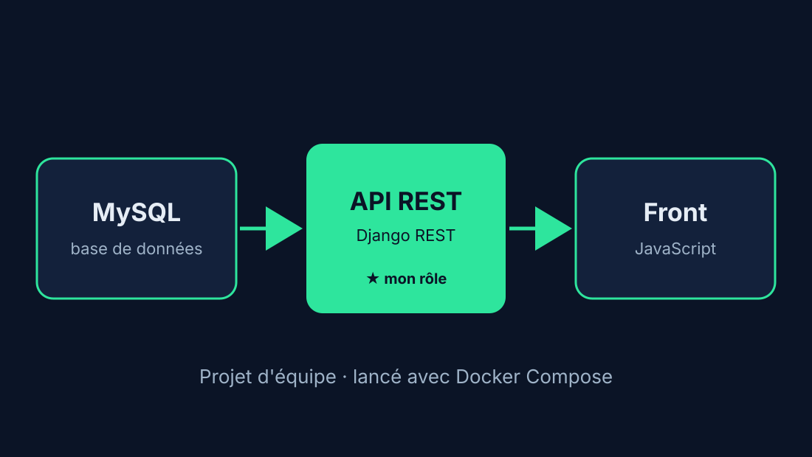
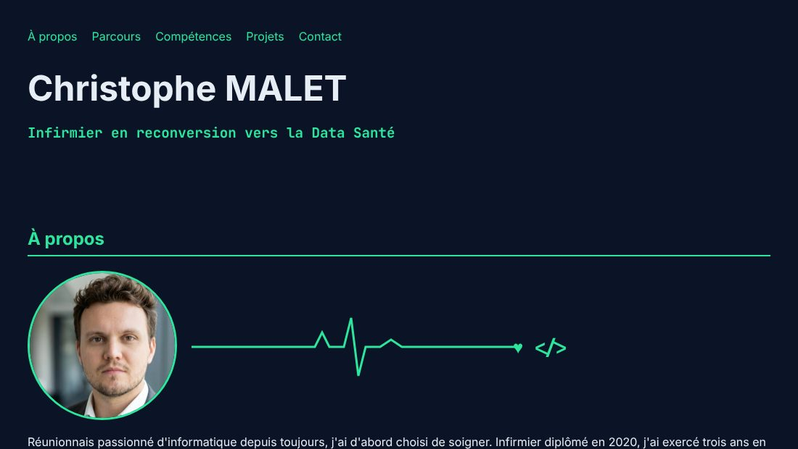
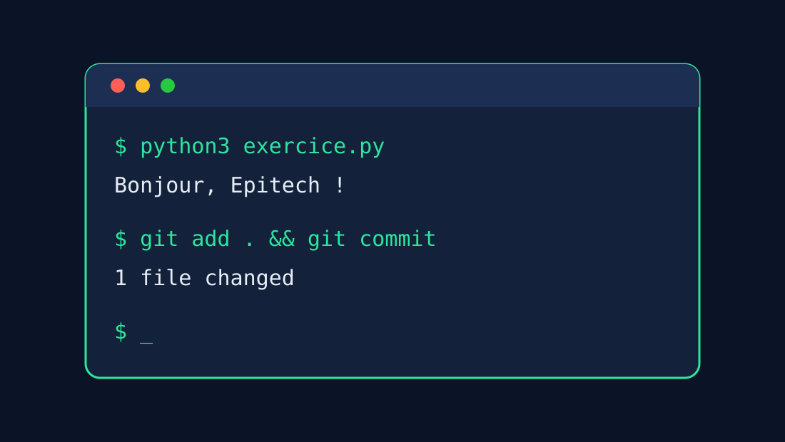
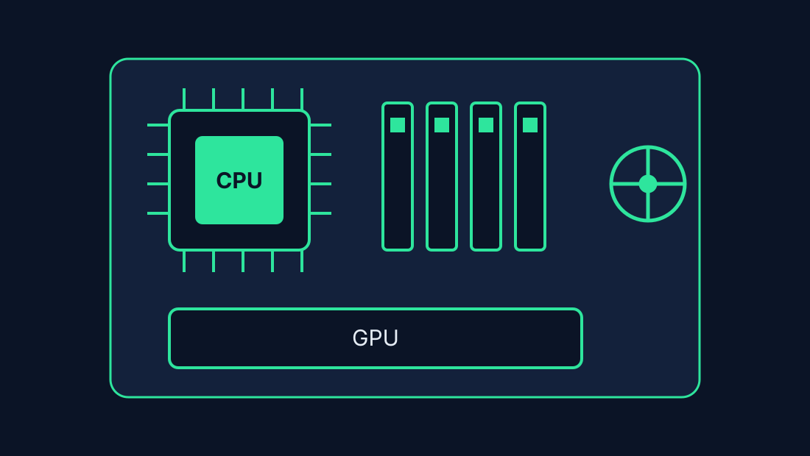
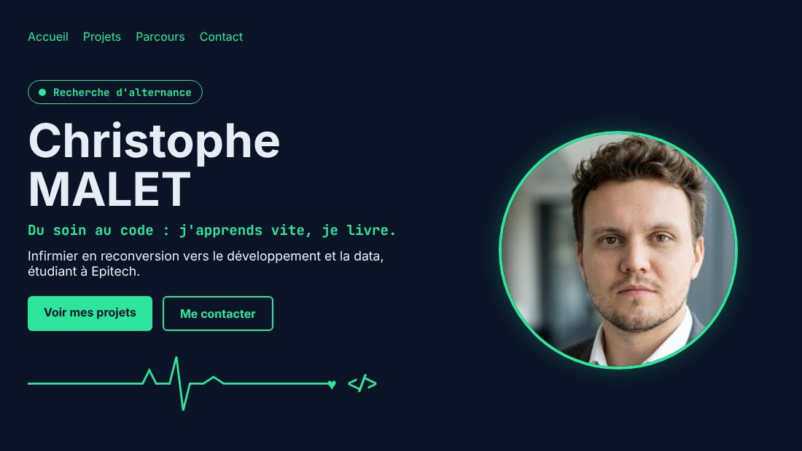

Projets

Job Board : Talentis
- Contexte et objectif
- Mon premier gros projet Epitech, en équipe : un site d'offres d'emploi (marque Talentis) avec comptes candidats, recruteurs et administrateurs. Objectif : livrer une application complète qui fonctionne.
- Mon rôle
- Le back-end et l'API en Python, et la mise en place de Docker pour que toute l'équipe lance le projet avec une seule commande.
- Compétences et technologies
- Python · Django 5 · Django REST Framework · MySQL · API REST · Docker Compose · Git · travail d'équipe
- Liens
- Dépôt GitHub public (copie du projet d'équipe, mon back-end en avant)

CV en ligne
- Contexte et objectif
- Bootcamp Web Epitech (4 jours), avec soutenance. Objectif : un CV en ligne original. J'ai choisi le concept du battement de cœur : un électrocardiogramme qui devient du code.
- Compétences et technologies
- HTML5 · CSS3 (animations, grid, variables) · JavaScript (formulaire) · SVG animé · Git
- Liens
- Dépôt GitHub privé Epitech : code présentable à l'oral

Piscines Python et Web
- Contexte et objectif
- Deux piscines intensives à Epitech pour apprendre vite : Python, puis les bases du web, de la structure au design.
- Compétences et technologies
- Python · Linux · Git · HTML · CSS · JavaScript
- Liens
- Exercices dans les dépôts privés Epitech

Montage de PC
- Contexte et objectif
- Passion personnelle : concevoir et assembler des configurations sur mesure, du choix des composants jusqu'à la mise en route.
- Compétences et technologies
- Matériel informatique · diagnostic · méthode et patience

Ce portfolio
- Contexte et objectif
- Projet Epitech « Portfolio » : un site multi-pages pour me présenter, avec le même thème que mon CV en ligne : le soin qui devient du code.
- Compétences et technologies
- HTML5 sémantique · CSS3 (grid, animations, responsive) · JavaScript · SVG animé · accessibilité · GitHub Pages (publication automatique)
- Liens
- Dépôt GitHub